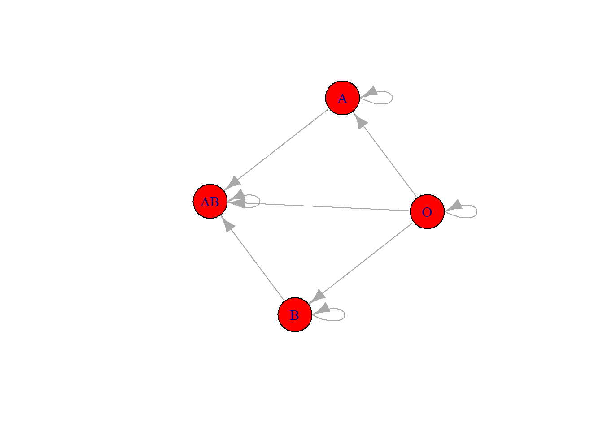
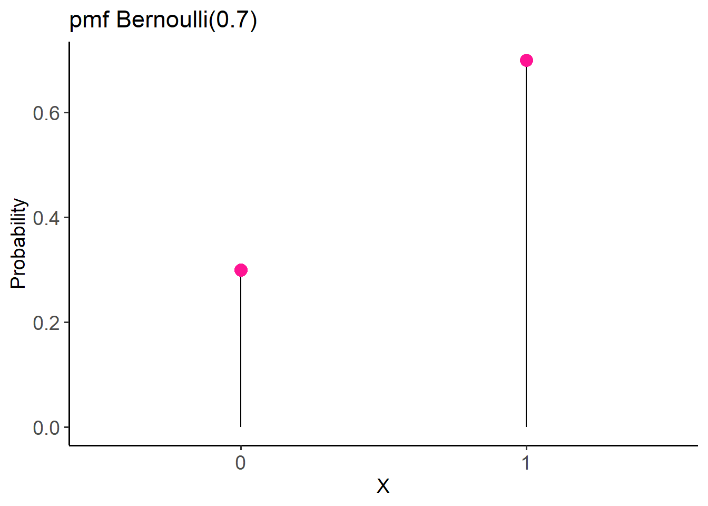
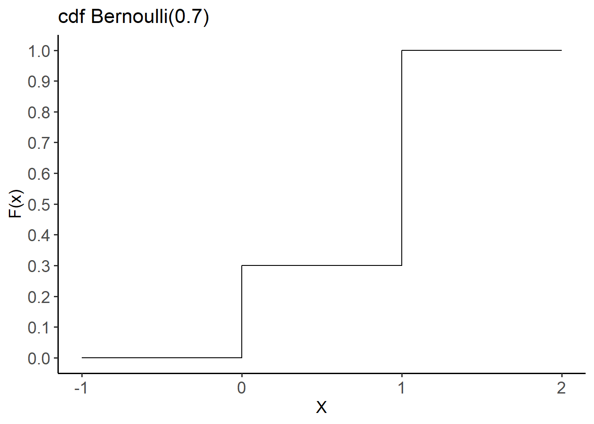
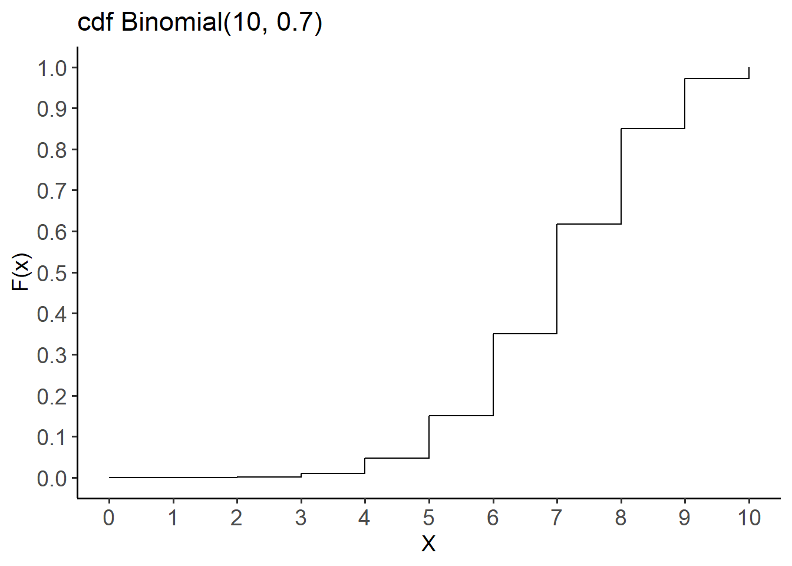
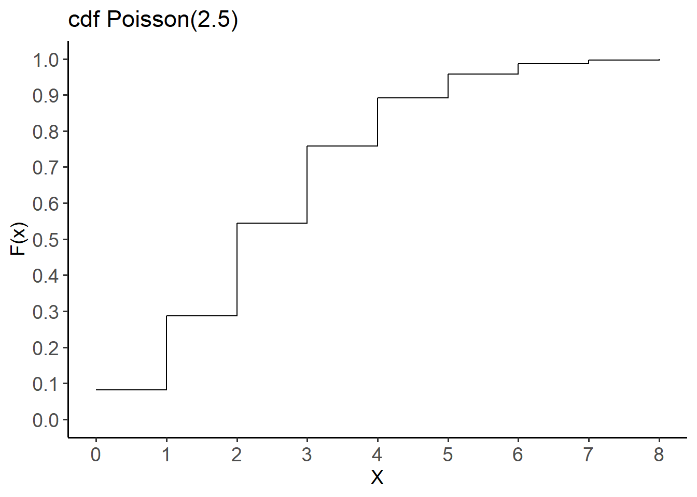

Warning: le package 'tidyverse' a été compilé avec la version R 4.4.3
Warning: le package 'purrr' a été compilé avec la version R 4.4.3
── Attaching core tidyverse packages ──────────────────────── tidyverse 2.0.0 ──
✔ dplyr 1.1.4.9000 ✔ readr 2.1.5
✔ forcats 1.0.0 ✔ stringr 1.5.1
✔ ggplot2 3.5.1 ✔ tibble 3.2.1
✔ lubridate 1.9.4 ✔ tidyr 1.3.1
✔ purrr 1.0.4
── Conflicts ────────────────────────────────────────── tidyverse_conflicts() ──
✖ dplyr::filter() masks stats::filter()
✖ dplyr::lag() masks stats::lag()
ℹ Use the conflicted package (<http://conflicted.r-lib.org/>) to force all conflicts to become errors
library(igraph)
Attachement du package : 'igraph'
Les objets suivants sont masqués depuis 'package:lubridate':
%--%, union
Les objets suivants sont masqués depuis 'package:dplyr':
as_data_frame, groups, union
Les objets suivants sont masqués depuis 'package:purrr':
compose, simplify
L'objet suivant est masqué depuis 'package:tidyr':
crossing
L'objet suivant est masqué depuis 'package:tibble':
as_data_frame
Les objets suivants sont masqués depuis 'package:stats':
decompose, spectrum
L'objet suivant est masqué depuis 'package:base':
union
14.2 Random variables and probability distributions
A random variable assigns a numerical quantity to every possible outcome of a random phenomenon and can be:
discrete if it takes either a finite number or an infinite sequence of possible values
continuous if it takes any value in some interval on the real numbers
Example of the blood type:
X = 1 for blood type A
X = 2 for blood type B
X = 3 for blood type AB
X = 4 for blood type O
The probability distribution describes the probability of different possible values of random variable X.
Probability distributions are often presented using probability tables or graphs:
Blood type
A
B
AB
O
X
1
2
3
4
P(X)
0.41
0.10
0.04
0.45
Blood types matching for a safe transfusion:
# data in a form of a matrixx <-c(1, 0, 0, 0, 1, 1, 0, 0, 1, 0, 1, 0, 1, 1, 1, 1)nodes_names <-c("O", "A", "B", "AB")adjm <-matrix(x, 4, dimnames =list(nodes_names, nodes_names))set.seed(124)# build the graph objectnetwork <-graph_from_adjacency_matrix(adjm)# plot itplot(network, vertex.size=32, vertex.color ="red")

What is the probability that a random selected person from the population can donate blood to someone with type B blood?
Degrees of freedom (i.e., the number of parameters that are free to vary) are intrinsic to probability distributions, influencing their shapes, properties, and applications and statistical analysis. For instance, in the chi-square, t, and F distributions, degrees of freedom determine their characteristics.
14.3 Discrete probability distributions
The probability distribution of a discrete random variable X is defined by the probability mass function (pmf) as:
\[
P(X=x)=P(x)
\]
where
\(P(X=x)\) is the probability that the random variable X takes value x and
\(P(x)\) is the probability of the specific outcome x occuring
The pmf has two properties:
\(P(x) \ge 0\)
\(\sum_xP(x)=1\)
The cumulative distribution function (cdf) gives the probability that the random variable X is less than or equal to x and is usually denoted as F(x):
\[
F(x)=P(X \le x) = \sum_{x_i \le x}P(x_i)
\]
When dealing with a random variable, it is common to calculate three important summary statistics: the expected value, variance and standard variation.
Expected value, denoted \(E(X)\) or \(\mu\) is defined as the weighted average of the values that X can take on, with each possible value being weighted by its respective probability, \(P(x)\)
\[
\mu=E(X)=\sum_i x_i.P(x_i)
\]
Variance, denoted \(\sigma^2\) is a measure of the variability of the X
A random experiment with two possible outcomes, generally referred to as success (x=1) and failure (x=0), is called a Bernouilli trial.
Let X be a binary random variable of a Bernouilli trial which takes the value 1 (success) with probability p and 0 (failure) with probability (1-p).
The distribution of the X variable is called Bernouilli distribution with parameter \(p\), denoted as \(X \sim Bernouilli(p)\), where \(0 \le p \le 1\)
Probability mass function pmf:
\[
P(X=x)=\left\{{1-p, \text{ for x = 0}\atop p, \text{ for x = 1}}\right.
\]
or
\[
P(X=x)=p^x(1-p)^{1-x} for\ x\in\{0,1\}
\]
$$
$$
Cumulative distribution function cdf of X:
\[
F(x) = P(X \le x)= {\begin{cases}0,&for\ x <0\\1-p,&for\ 0\leq x < 1\\1,&for\ x \geq 1 \end{cases}}
\]
The expected value of random variable X, with Bernouilli(p) distribution is:
\[
\mu=E(X)=p
\]
The variance is:
\[
\sigma^2=Var(X)=p(1-p)
\]
And the standard deviation is:
\[
\sigma=\sqrt{Var(X)}=\sqrt{p(1-p)}
\]
Let X be a random variable representing the result of a surgical procedure, where X = 1 if the surgery was successful and X = 0 if it was unsuccessful. Suppose that the probability of success if 0.7; then X follows a Bernouilli distribution with parameter \(p=0.7\):
# Create a data framex <-as.factor(c(0, 1))y <-c(0.3, 0.7)dat1 <-data.frame(x, y)# Plotggplot(dat1, aes(x = x, y = y)) +geom_segment(aes(x = x, xend=x, y=0, yend = y), color ="black") +geom_point(color="deeppink", size =4) +theme_classic(base_size =14) +labs(title ="pmf Bernoulli(0.7)",x ="X", y ="Probability") +theme(axis.text =element_text(size =14))

The cdf of this distribution is:
\[
F(x) = P(X \le x)={\begin{cases}0,&for\ x <0\\0.3,&for\ 0\leq x < 1\\1,&for\ x \geq 1 \end{cases}}
\]
# Create a data framedat2 <-data.frame(x =-1:2, y =pbinom(-1:2, size =1, prob =0.7))# Step line plotggplot(dat2, aes(x=x, y=y)) +geom_step() +scale_y_continuous(limits =c(0, 1), breaks =seq(0, 1, 0.1)) +theme_classic(base_size =14) +labs(title ="cdf Bernoulli(0.7)", x ="X", y ="F(x)") +theme(axis.text =element_text(size =14))

The mean is \(\mu=p=0.7\) and the variance is \(\sigma^2=p(1-p)=0.7.(1-0.7)=0.7 * 0.3=0.21\)
14.3.2 Binomial distribution
There is a fixed number of n repeated Bernoulli trials
The n trials are all independent. That is, knowing the result of one trial does not change the probability we assign to other trials
Both probability of success, p, and probability of failure, 1-p, are constant throughout the trials
Let X be a random variable that indicates the number of successes in –independent Bernouilli trials. If random variable X satisfies the binomial setting, it follows the binomial distribution with parameters n and p, denoted as \(X \sim Binomial(n,p)\) where n is the Bernouilli trial parameter (a positive integer) and p the Bernouilli probability parameter (\(0\le p \lt 1\)).
The probability mass function (pmf) of X is given by :
The cumulative distribution function (cdf) of X is given by :
\[F(x) = P(X \le x)= {\begin{cases}0,&for\ x <0\\\sum_{k=0}^{x}{\left( \begin{array}{c} n \\ k \end{array}
\right) p^{k}(1 - p)^{n-k}},&for\ 0\leq x < n\\1,&for\ x \geq n \end{cases}}\]
The mean of random variable X with Binomial(n,p) distribution is :
\[
\mu = np
\]
The variance is:
\[
\sigma^2=np(1-p)
\]
And the standard deviation is
\[
\sigma = \sqrt{np(1-p)}
\]
Let the random variable X be the number of successful surgical procedures and suppose that a new surgery method is successful 70% of the time (p=0.7). If the results of 10 surgeries are randomly sampled, and X follows a Binomial distribution \(X \sim Binomial(10, 0.7)\), find the main characteristics of this distribution.
# Create a data framedat4 <-data.frame(x =0:10, y =pbinom(0:10, size =10, prob =0.7))# Step line plotggplot(dat4, aes(x=x, y=y)) +geom_step() +theme_classic(base_size =14) +scale_x_continuous(limits =c(0, 10), breaks =seq(0, 10, 1)) +scale_y_continuous(limits =c(0, 1), breaks =seq(0, 1, 0.1)) +labs(title ="cdf Binomial(10, 0.7)",x ="X", y ="F(x)") +theme(axis.text =element_text(size =14))

The mean is \(\mu=np=10*0.7=7\) successful surgeries and the variance is \(\sigma^2=np(1-p)=10*0.7*0.3=2.1\).
Let’s calculate the probability of having more than 8 successful surgical procedures out of a total of 10. Therefore, we want to calculate the probability \(P(X>8)\):
Another way to find the above probability is to calculate \(1-P(X \le 8)\):
1-pbinom(8, size =10, prob =0.7)
[1] 0.1493083
14.3.3 Poisson distribution
The Poisson setting:
The events (occurrences) are counted within a fixed interval of time or space. The interval should be well-defined and consistent.
Each event is assumed to be independent of the others. The occurrence of the event does not affect the probability of another event happening.
The probability of an event occurring remains consistent throughout the interval.
Let X be a random variable that indicates the number of events (occurrences) that happen within a fixed interval of time or space. If \(λ\) represents the average rate of events (occurrences) in this interval or space, the X has a Poisson distribution that is specified by the parameter \(λ\), denoted as \(X ∼ Poisson(λ)\), where \(λ\) is a positive real number (\(λ >0\)).
The probability mass function (pmf) of X is given by:
The mean and variance of a random variable that follows the Poisson(λ) distribution are the same and equal to λ:
μ = λ
\(σ^2\) = λ
Let X be a random variable of the number of successful heart transplant surgeries per week in a specialized clinic center. We assume that the average rate of successful surgeries per week is 2.5 (\(\lambda=2.5\)) and X follows a Poisson distribution :
\(X \sim Poisson(2.5)\)
The probability mass function (pmf) of X is :
\[ P(X=x)={\frac {2.5 ^{x}e^{-2.5 }}{x!}} \]
The resulting probability table is :
X
0
1
2
3
4
5
6
7
8
…
P(X)
0.082
0.205
0.257
0.214
0.134
0.067
0.028
0.01
0.003
…
We can compute the above probabilities using the dpois() function :
# Create a data framedat6 <-data.frame(x =0:8, y =ppois(0:8, lambda =2.5))# Step line plotggplot(dat6, aes(x=x, y=y)) +geom_step() +theme_classic(base_size =14) +scale_x_continuous(limits =c(0, 8), breaks =seq(0, 8, 1)) +scale_y_continuous(limits =c(0, 1), breaks =seq(0, 1, 0.1)) +labs(title ="cdf Poisson(2.5)",x ="X", y ="F(x)") +theme(axis.text =element_text(size =14))

To calculate the probability of up to four successful hear transplant surgeries per week :
ppois(4, lambda =2.5)
[1] 0.891178
14.4 Probability distributions for continuous outcomes
Unlike discrete random variables, which have a probability mass function (pmf) that assigns probabilities to individual values, continuous random variables have a probability density function (pdf), denoted as f(x), which satisfies the following properties:
\(f(x) \geq 0\)
\(\int_{-\infty}^{+\infty} f(x) \, dx = 1\)
In this case, we are interested in the probability that the value of the random variable X is within a specific interval from \(x_1\) to \(x_2\), denoted as \(P(x_1 ≤ X ≤ x_2)\).
\[ P(x_1\leq X \leq x_2)=\int_{x_1}^{x_2}f(x)dx \]